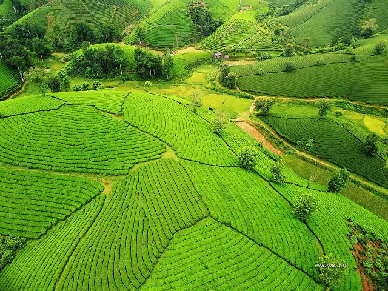
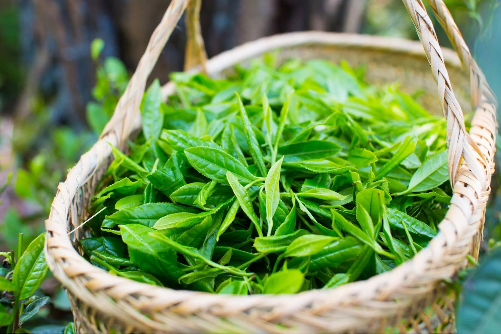
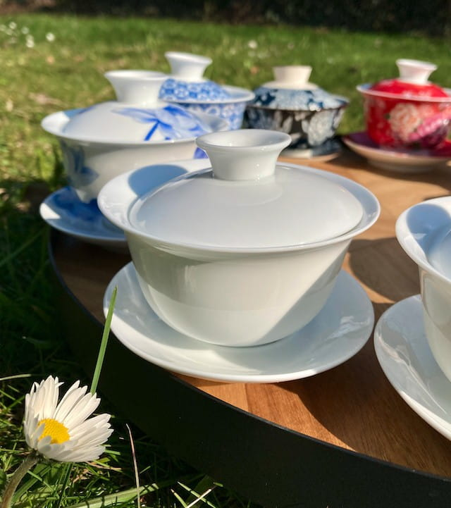
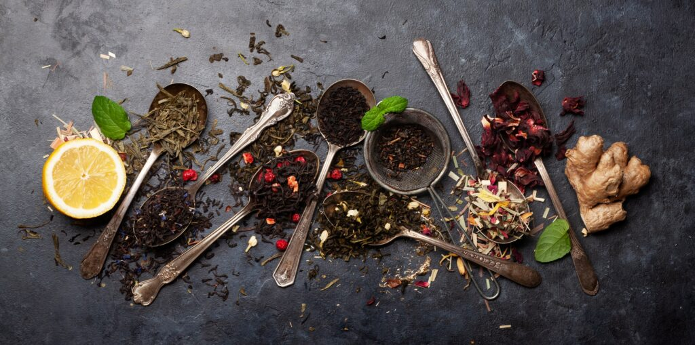
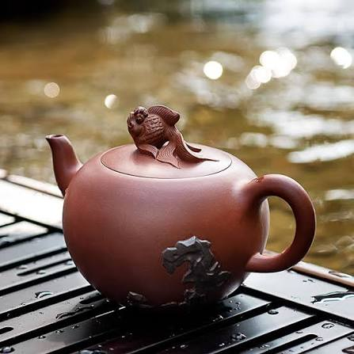

Galeria
Od tradycyjnych plantacji i zbiorów po rzemieślnicze naczynia oraz rytuał parzenia.
Tradycyjny rytuał parzenia herbaty – sztuka spokoju i precyzji





Od tradycyjnych plantacji i zbiorów po rzemieślnicze naczynia oraz rytuał parzenia.
Tradycyjny rytuał parzenia herbaty – sztuka spokoju i precyzji




